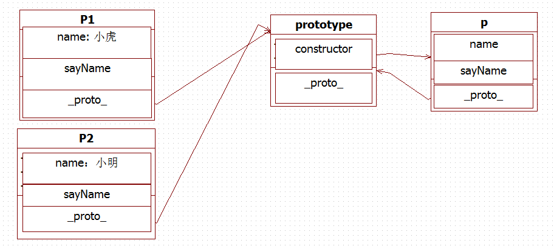

1.OOP是指什么？有哪些特性
OOP : Object Oriented Programming 面向对象编程，其中两个最重要的概念就是类和对象。类只是具备了某些功能和属性的抽象模型，类在实例化之后得到的实体就是对象
特性：
- 继承：子类自动继承父类中的属性和方法，并可以添加新的属性和方法或者对部分属性进行重写。
- 封装“: 隐藏对象的属性和实现细节，将功能进行封装，仅对外开放接口
- 多态：同一属性或方法在不同的对象上有不同的表现形式。
2.如何通过构造函数的方式创建一个拥有属性和方法的对象
1 | function Person(name){ |
3.prototype是什么？有什么特性
javaScript中创建的每一个函数都有prototype（原型）属性，这个属性是一个指针，指向原型对象，原型对象拥有的一系列属性和方法都被所有特定类型的实例共享
4.画出代码的原型图
1 | function People(name){ |

5.创建一个Car对象，拥有属性name,color,status;拥有方法run,stop,getStatus
1 | function Car(name,color,status){ |
6.创建一个GoTop对象，当new一个GoTop对象则会在页面上创建一个回到顶部的元素，点击页面滚动到顶部。拥有以下属性和方法
1 | 1. 'ct'属性，GoTop对应的DOM元素的容器 |
效果→效果
7.使用木桶布局实现一个图片墙
效果→效果